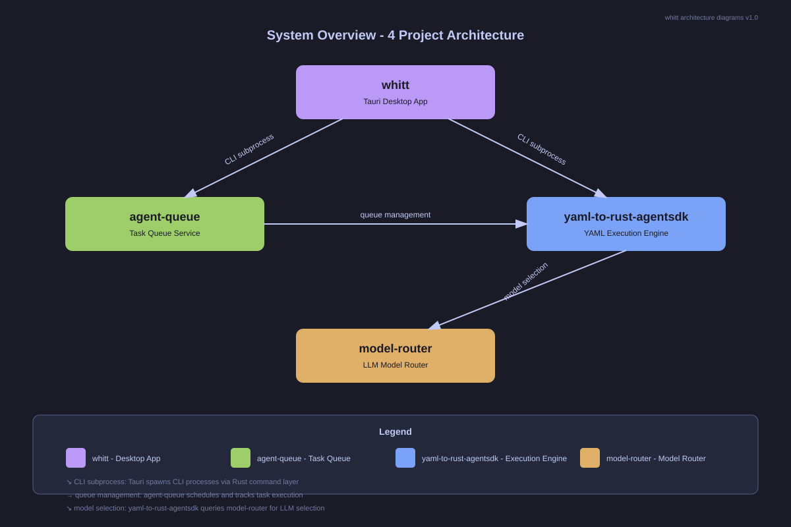

00 - System Overview
100%
Whitt (UI/TUI)
agent-queue (Scheduling)
yaml-to-rust-agentsdk (Execution)
model-router (Model Selection)

Key Points
- Whitt is the user-facing shell - it displays, it doesn't execute
- agent-queue orchestrates scheduling - it delegates execution to yaml-to-rust-agentsdk
- yaml-to-rust-agentsdk is the execution engine - it runs workflows and calls LLMs
- model-router selects the best model for each task (future integration)
- All communication is CLI subprocess (JSON stdin/stdout) in MVP